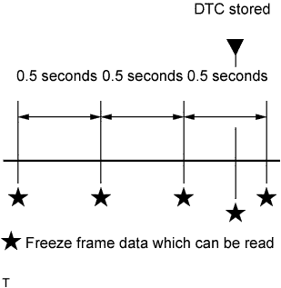

These data sets can be used to simulate the condition of the vehicle from around the time of the occurrence of the malfunction. The data may assist in identifying the cause of the malfunction, and in judging whether it was temporary or not.
The ECM records vehicle and driving condition information as freeze frame data the moment a DTC is stored. When troubleshooting, freeze frame data can be helpful in determining whether the vehicle was moving or stationary, whether the engine was warmed up or not, whether the air-fuel ratio was lean or rich, as well as other data recorded at the time of a malfunction. Freeze frame data records the engine conditions (fuel system information, calculated load, engine coolant temperature, fuel trim, engine speed, vehicle speed, etc.) when a malfunction is detected.
HINT:
If it is impossible to duplicate the problem even though a DTC is output, check the freeze frame data.

The ECM records engine conditions in the form of freeze frame data every 0.5 seconds. Using the intelligent tester, 5 separate sets of freeze frame data can be checked.